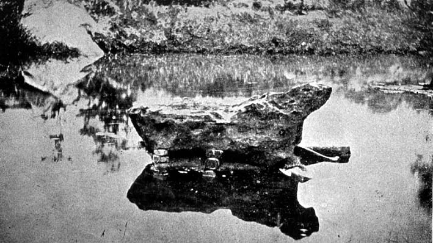

|
|  |
|
João Baptista de
Lacerda, Meteorito do Riacho de Bendegó (Bahia)
|
In addition to difficulties of transport, climate, adverse political conditions and other problems encountered by the Brazilian Scientific Commission of 1859 and similar 'national expeditions' during the greater part of the nineteenth century, the production of collectibles was in itself hardly an easy task. If 'natural history' supposedly limited itself to the discreet and disinterested reproduction of the 'order of nature' that rendered itself immediately and transparently to the trained eye of the scientist, bringing this order into the museum implied the construction of a complex network of alliances: collections of 'national' fauna and flora, for instance, were deemed 'valuable' only if they were not merely 'complete' and duly classified, but also comprising 'comparative collections' of specimens from other regions and even other continents. Latin America´s fledgling national museums therefore had to struggle hard to compete with their metropolitan peers on the international scientific marketplace, exchanging duplicates of vernacular specimens and artefacts for foreign merchandise, and lobbying national governments to impose taxes on foreign collectors´ hardware about to be shipped abroad. Financial and material constraints limited their efforts for most of the century: Rio´s Museu Nacional only possessed the extremely modest number of 1,600 botanical specimens when its first catalogue was published in 1838, although it managed to increase its assets to a more respectable 30,000 by the end of the century. Its zoological collections were hardly more impressive, despite the variety of species found in the country: on visiting the institution in 1865, Louis Agassiz, the famed Swiss zoologist, sneeringly dismissed it as 'une antiquaille', and went on complaining that exhibits were in a state of decay, poorly classified, and "the fish, except for some magnificent specimens from the Amazon, do not give an idea of the variety one finds in the waters of Brazil. You would form a better collection at the city market on a single morning."
|